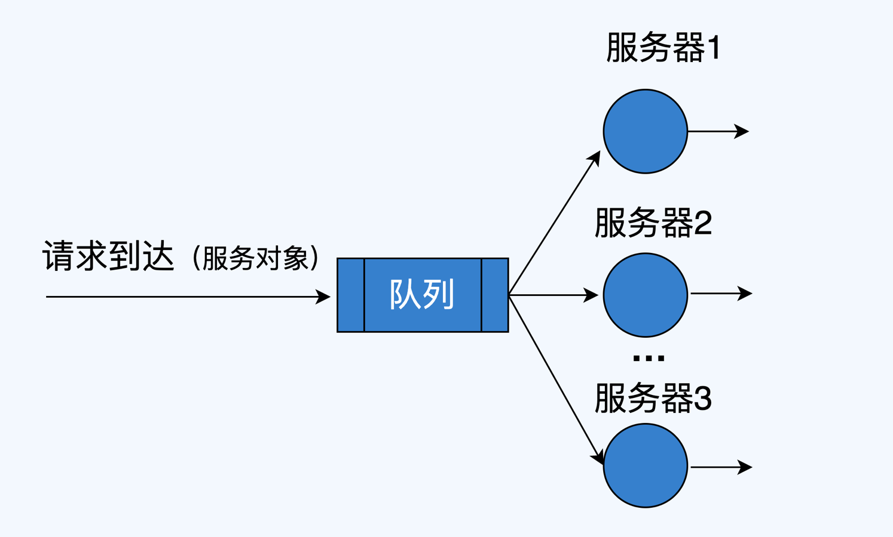
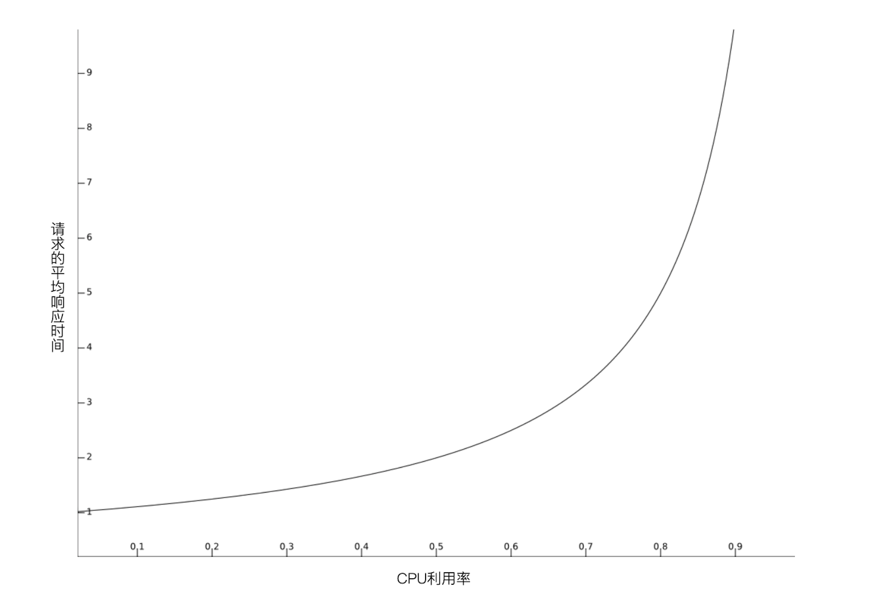
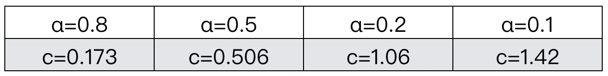

- 00 开篇词 互联网时代，人人肩负容量保障的职责.md.html
- 01 容量保障的目标：容量保障的目标是什么？该如何度量？.md.html
- 02 容量测试与验证：怎样科学实施容量测试？.md.html
- 03 容量指标分析经典5问：响应时间真的是越短越好吗？.md.html
- 04 容量治理的三板斧：扩容、限流与降级.md.html
- 05 全链路压测：系统整体容量保障的“核武器”（上）.md.html
- 06 全链路压测：系统整体容量保障的“核武器”（下）.md.html
- 07 工具进化：如何实现一个分布式压测平台.md.html
- 08 容量预测（上）：第三只眼，通过AI预测服务容量瓶颈.md.html
- 09 容量预测（下）：为不同服务“画像”，提升容量预测准确性.md.html
- 10 浅谈排队论：数学之美，通过建模计算容量.md.html
- 11 与时俱进：云原生下的容量保障新趋势.md.html
- 12 大促容量保障体系建设：怎样做好大促活动的容量保障工作（上）.md.html
- 13 大促容量保障体系建设：怎样做好大促活动的容量保障工作（下）.md.html
- 14 容量保障组织建设：容量保障需要什么样的团队？.md.html
- 15 小公司也能做好容量保障：建设经济实用型的容量保障体系.md.html
- 加餐 学习容量保障的那些经典资料.md.html
- 结束语 做时间的朋友，成功是持续累积而成的.md.html
- 捐赠
10 浅谈排队论：数学之美，通过建模计算容量
你好，我是吴骏龙。
我已经与你分享了不少容量保障实践中的干货，下面我们换换口味，来看看学术界对于容量保障有哪些有意思的研究方法，今天我想给你讲一讲排队论的一些基本概念以及在容量保障中的应用场景。
坦白说，在短短一讲中说明白排队论，是一件极具挑战的事情，高等院校往往需要一个学期讲授排队论，怎么也有30多个学时，而且学习门槛很高，需要具备很强的数学功底。更要命的是，市面上几乎所有的排队论学习资料面向的都是制造系统，或是一些排队服务场景，比如银行柜台服务、超市收银台之类的场景，导致很多想学习排队论的计算机从业人员都有无从下手的感觉。
其实，排队场景和互联网系统服务是有相似之处的，只不过后者是流量在排队，软件系统在服务罢了，排队论完全可以指导我们解决一些互联网场景下的实际问题。 今天这一讲我会全程从互联网视角出发，从排队论的基础知识、应用策略讲到它在容量保障中的应用。如果你学习了这一讲后，对排队论有了更浓厚的兴趣，我在最后也提供了一些参考资料，你可以进一步学习，加深理解，开阔眼界。
我们开始吧。
排队论的基础知识
我们先简单了解一下排队论的发展历史，排队论本质上是运筹学的一个研究方向，早在1909年就已有研究成果，当时被称为“话务理论”，解决了自动电话的设计问题[1]。随着研究范围的扩展，排队论逐渐演变成为专门研究带有随机因素产生拥挤现象的优化理论，是有关于服务设施与被服务者构成的排队服务系统的理论。
用更通俗易懂的话来说，我们每天都会遇到各种各样的排队现象，去超市买东西要排队，去银行取钱要排队等等。在很多情况下，排队都会带来负面影响，急诊室医生繁忙导致患者无法得到及时治疗，机场航班起飞时排队导致航程延误，都是活生生的例子。
排队论说白了，就是用数学方法来模拟这些排队场景，并协助我们做出优化的理论，比如针对上面的例子，排队论能够帮助我们解答，配备多少医生可以满足所有患者的治疗需求，怎样调度跑道能够使绝大多数飞机准时起飞。
下面，我们来看一个最简单的排队系统模型，如下图所示，它由服务机构、服务对象和队列组成，你可以把服务对象当作是用户请求，将服务机构想象为互联网服务，队列可以认为是请求来不及处理而处于等待状态（延迟），那么这个排队系统就可以类比为互联网系统提供服务的形态。
在整个排队系统中，需要关注几个要点：
1. 输入过程： 用户访问按照怎样的规律到达。比如用户访问时间的概率分布，在互联网场景下，我们一般认为各个用户的访问请求是独立的，且遵从同一概率分布。
2. 排队规则： 用户请求在系统中以什么形式排队等待处理，队列是单队列还是多队列，并行还是串行，容量是有界还是无界的等等，这会衍生出不同的排队模型。
3. 服务规则： 服务节点的数量、服务协议、处理请求的顺序，等等。
我们暂时先了解这些基础知识，下面我会介绍如何利用排队论进行建模，帮助你更好的将排队论应用到实际场景中。
排队论的应用策略：排队模型与公式
这部分内容请你重点关注，因为这是我花了大量时间将排队论在互联网领域的应用策略抽象到最精简的程度，甚至你都不需要具备数理分析基础，下面这1000多字就能帮助你掌握排队论应用的方法论。
我提供的应用策略非常简单，分两步走：首先，选择合适的排队系统模型；其次，利用模型中的各种公式计算出你要的容量结论。
先说排队模型，排队系统有很多模型，名称也是让人眼花缭乱，什么M/M/s，M/M/s/s，M/G/1等等，教你一个记忆的窍门，记住这个格式A/B/n/S/Z即可，具体的含义为：A - 请求到达的规律；B - 服务时间分布；n - 服务窗口数目；S - 系统容量限制；Z - 服务规则。
好像还是挺复杂的，那么我们再简化一下，既然排队论是用来预测系统容量的，那么可以先假定系统容量充足，即S -> ∞；然后，我们默认绝大多数请求都是按顺序响应的，所以Z也可以定死就是先来先服务的规则（FCFS，First Come First Service)）。这样，我们讨论的排队系统模型可以简化为只考虑A/B/n，这下是不是容易记了？
下面，我具体介绍在互联网场景中较为典型的排队系统模型：M/M/s模型，以及其衍生的M/M/1模型。
M/M/s排队模型如下图所示，其中，M代表无记忆性分布，典型的有几何分布和指数分布，无记忆性指的是后面事件发生的概率与前面事件是否发生无关，比如我将要访问一个页面，这与你之前访问过这个页面无关，我们默认所有访问请求都是符合这一特点的。s指的是s个服务器共享一个公用到达作业池，说大白话，就是s个服务节点都从一个队列中获取请求去处理，我们假定这个队列是无限的，请求是先来先服务的。

想象一下，如果你有一个集群对外提供某种服务，是不是挺符合M/M/s模型的？如果集群中只有一个节点，那么M/M/s模型就退化为M/M/1模型。
了解了M/M/s模型，接下去我们来看M/M/s模型的三大基本公式，分别是：系统利用率公式，资源需求公式和平均等待时间公式。
- 系统利用率公式 ρ = λ / sμ： 其中λ指的是到达率，每秒到达的请求数，也可以认为是流量。μ为服务率，也就是每秒能处理的请求数，sμ就是系统总共能处理的请求数。所以最后得到的系统利用率ρ，转换为互联网术语，其实就是指系统负载。
- 资源需求公式R = λ / μ： 这个公式比较好理解了，到达请求数λ除以每秒能处理的请求数μ，就得到了资源的需求量R，所以R也被称之为维持系统稳定的最小预期服务器数量。
- 平均等待时间公式E[T] = 1 / (sμ - λ)： 一般也就是指平均响应时间。
上述这些公式的推导，还是需要具备一定理论基础的，不过我们不是搞学术的也不必深究，理解这些公式中各个参数的含义，在解决实际问题时能够灵活应用，就可以了。记得我给出的两步走策略：选取合适的模型，使用模型中的公式进行计算。
排队论在容量保障的应用
到这里，武器都已经交给你了，我们一起上战场操练一下吧。我会分享两个典型案例，分别是：设定负载水位风险阈值，以及排队论在容量规划中的应用。
1. 设定合理的CPU利用率水位预警阈值
我们时常会遇到这样的问题，如何评判一个服务的负载究竟到什么水位是有风险的？假设就以CPU利用率为例，这个问题我问过很多人，得到的回答颇为玄学，保守派认为CPU利用率达到70%就应该扩容了，激进派则认为CPU利用率达到90%还可以观察观察。有没有一种科学的方法能回答这个问题呢？排队论就可以解答。
上面刚学过的策略在这里可以应用起来了，第一步是选取合适的模型，为了简化问题，这里我们可以只考虑一台服务器的情况，使用M/M/1模型进行推算。
第二步，使用模型中的公式进行计算。首先，根据系统利用率公式ρ = λ / sμ，得到在s=1时的服务负载为ρ = λ / μ。
我们再使用平均响应时间公式E[T] = 1 / (sμ - λ)，得到在s=1时请求的平均响应时间E[T] = 1 / (μ - λ)，从公式ρ = λ / μ，我们可以得到λ = ρμ，代入后可以推导出E[T] = 1 / μ(1 - ρ)，这表明了请求的平均响应时间E[T]是与1 / (1 - ρ)成正比的，我们将1 / (1 - ρ)绘制成曲线，如下图所示。

图中横轴为CPU利用率，纵轴为请求的平均响应时间。你可以很明显的观察到，曲线在横轴值为0.8左右出现拐点，这就意味着CPU利用率超过80%后，平均响应时间会急剧上升，因此对于符合M/M/1模型的计算型服务，将CPU利用率水位风险阈值设定为80%是比较合理的。
当然，实际情况可能会复杂一些，比如有些服务可能是部署在容器上的，如果容器设置了超卖策略（某个容器实例的CPU配额用满后，可以在一定限度内抢占其他实例的CPU额度），那么这个阈值可以根据实际超卖比例适当提高一些，不必太教条。
2. 利用排队论进行容量规划
第二个想与你分享的案例是关于排队论在容量规划中的应用，这也是排队论的重要用武之地，我们来看一下具体的问题。这个问题改编自《计算机系统的性能建模与设计：排队论实战》[2]，我做了一定的优化和扩充，如果你对平方根配置规则中的公式推导感兴趣，不妨参阅该书第15章内容。
假设一个服务的平均流量为λ，它平均每秒能处理μ个请求，我们最多能够接受20%的请求处于排队状态，请问需要多少台服务器能够达到这个目标？
针对这个问题，还是相同的套路，先选取合适的模型。既然问题是“需要多少台服务器”，那么模型肯定得选取M/M/s，其中s就是我们要计算的值。
第二步，选取合适的公式进行推导。这里我要介绍给你一个重要的定理，称之为“平方根配置规则”，内容是这样的。
给定一个M/M/s模型，资源需求公式R = λ / μ，令k表示确保“请求排队概率小于α”所需的最少服务器数，则有k≈R+c√R，其中c是方程的解cΦ©/φ©=(1-α)/α，Φ©表示标准正态的累积分布函数，φ©表示它的概率密度函数。
我猜你可能要抓狂了，每个字我都认识，怎么合起来就看不懂呢…… 其实平方根配置规则是可以按照上面提到的三大基本公式推导出来的，只不过推导过程非常之复杂，这里我主要对两个关键点做一下解读，帮助你理解并能够投入实际使用。
第一个关键点是k≈R+c√R这个公式，你可能会有疑惑，既然R是到达请求数λ除以每秒能处理的请求数μ，那么使用R台服务器不就可以及时处理每个到达的情求，确保请求都不排队了吗？为什么还要加上个c√R？
如果你有这样的疑问，那么说明你对M/M/s模型还没有理解透彻，可以回顾一下M是什么意思，它代表了请求到达时间是服从无记忆性分布的，我们不用管具体是哪种分布，它至少表明了请求到达时间不是均匀的，而是按照一定概率变化的。所以很显然，即便你有再多的服务器，请求依然有一定概率会排队，只不过服务器越多，排队的概率就越低而已，这个概率就体现在c√R中。
第二个关键点挺有意思的，我们发现c的取值只和α有关，而与R无关，这也就意味着只要确定了α，就能算出c（尽管还是很难算，哈哈），下面我根据定理中的公式预先计算了一些值出来，你直接查表就行。

在我们最开始的问题中，最多能够接受20%的请求处于排队状态，即α=0.2，那么c的值差不多就是1，于是得出k≈R+√R，这就是我们想要的结论。
总结
排队论是一门非常强大的科学理论，具有悠久的历史，虽然互联网服务的复杂性远远超过其他排队场景，导致排队论在工程上的应用不太普遍，但我依然认为，排队论可以在一些特定的互联网问题上指导我们的工作，而且这种指导非常重要。
排队论不像全链路压测，可能会对生产环境带来一定风险，也不像容量预测，需要花费时间建模并调优，排队论为我们提供了一种数学武器，并且已经总结好了大量现成的模型和公式，我们要做的，就是应用好这些武器，为容量保障出力。
这一讲中，我先介绍了排队论的基础知识，并与互联网概念，包括流量、请求、服务器数量等做了结合，试图让你更快更好地理解排队论的常识。输入过程、排队规则和服务规则是排队系统的三个要点，它们决定了一个排队系统的形式和特点。
接着，我介绍了排队系统的应用策略，可以总结为：选取合适的模型和选取合适的公式进行计算，这两个步骤。我与你探讨了M/M/s和M/M/1模型，以及三大基本公式，同样的，我也将公式中的一些参数与互联网概念做了对应，帮助你更好的理解。
最后，我给出了两个排队论的应用案例，它们都是容量保障工作中经常会遇到的问题，我们通过排队论进行了科学的推导和解答，也对一些重点定理，如平方根配置规则和疑问做了解释，你都学会了吗？
参考
[1] The Theory of Probabilities and Telephone Conversations [J],K. Erlang,1909.
[2] 莫尔·哈肖尔-巴尔特. 计算机系统的性能建模与设计：排队论实战[M]. 方娟，蔡旻，张佳玥译. 机械工业出版社，2020：187-189.
课后讨论
针对我今天谈到的第一个案例：设定CPU利用率水位的预警阈值，如果所有服务都是容器部署，且每个容器实例都设置了相同的CPU超卖策略，我是不是可以直接将宿主机的CPU利用率80%作为预警阈值？欢迎与我交流你的想法。
© 2019 - 2023 Liangliang Lee. Powered by gin and hexo-theme-book.